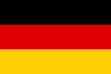
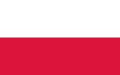

Un total de 2548 goles han sido anotados en las 21 ediciones de los torneos finales de la Copa Mundial de la FIFA, con exclusión de los tiros penales convertidos. Desde el primer gol anotado por el jugador francés Lucien Laurent en la Copa Mundial de la FIFA 1930, más de 1250 futbolistas han marcado al menos en una ocasión en la Copa Mundial, pero solo 97 de ellos han anotado al menos cinco goles.
Goleadores
Maximos goleadores
| Jugador | Seleccion | Goles | Partidos jugados |
|---|---|---|---|
| Miroslav Klose |  Alemania | 16 | 24 |
| Ronaldo Nazario |  Brasil Brasil |
15 | 19 |
| Gerd Müller | Alemania | 14 | 13 |
| Just Fontaine |  Francia Francia |
13 | 6 |
| Pelé | Brasil |
12 | 14 |
| Sándor Kocsis | Hungria | 11 | 5 |
| Jürgen Klinsmann | Alemania | 11 | 17 |
| Helmut Rahn | Alemania | 10 | 10 |
| Gary Lineker |  Inglaterra Inglaterra |
10 | 12 |
| Gabriel Batistuta |  Argentina Argentina |
10 | 12 |
| Edicion | Jugador | Goles |
|---|---|---|
 Uruguay 1930 Uruguay 1930 |
Guillermo Stábile |
8 |
 Italia 1934 Italia 1934 |
 Oldřich Nejedlýn Oldřich Nejedlýn |
5 |
| Francia 1938 |
Leônidas da Silva |
7 |
| Brasil 1950 |
Ademir |
8 |
 Suiza 1954 Suiza 1954 |
Sandor Kocsis | 11 |
 Suecia 1958 Suecia 1958 |
Just Fontaine |
13 |
 Chile 1962 Chile 1962 |
Garrincha |
4 |
| Inglaterra 1966 |
 Eusébio Eusébio |
9 |
| Mexico 1970 | Gerd Müller | 10 |
| Alemania 1974 |  Grzegorz Lato | 7 |
| Argentina 1978 |
Mario Kempes |
6 |
 España 1982 España 1982 |
Paolo Rossi |
6 |
| Mexico 1986 | Gary Lineker |
6 |
| Italia 1990 |
Salvatore Schillaci |
6 |
 Estados Unidos 1994 Estados Unidos 1994 |
Oleg Salenko | 6 |
| Francia 1998 |
 Davor Šuker Davor Šuker |
6 |
 Corea del Sur / Japón 2002 Corea del Sur / Japón 2002 |
Ronaldo |
8 |
| Alemania 2006 | Miroslav Klose | 5 |
 Sudafrica 2010 Sudafrica 2010 |
David Villa |
5 |
| Brasil 2014 |
James Rodríguez | 6 |
| Rusia 2018 | Harry Kane |
6 |